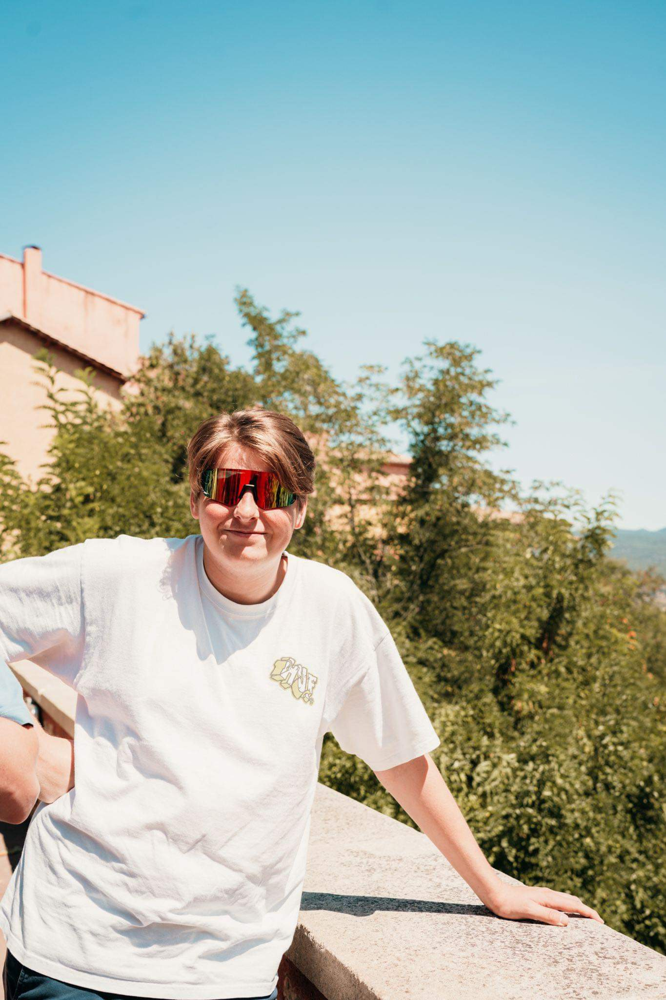

Warre Verbeek
25/06/2006 - 18 jaar
Over Mij
Ik ben een gemotiveerde student met een passie voor IT en netwerken. Ik heb ervaring met webontwikkeling en verschillende programmeertalen.
Werkervaring
- Ober - Bollekeshoeve (Kinderboerderij) (2022 - 2023)
- Barman & Wafelbarman - IJsbaan Heist (2023 - 2024)
- Vrijwilliger - Evenementen zoals Hestival, Grenzeloos
- Kassier - Delhaize Heist-op-den-Berg (2024 - ...)
- Erasmus+ stage - International Language School Dublin (07/06/2024 - 27/04/2024)
Opleidingen
- Techniek Wetenschappen - Heilig-Hartcollege (2018 - 2022)
- IT en Netwerken - Campus Sint-Ursula (2022 - 2024)
- Toegepaste Informatica - Karel de Grotehogeschool (2024 - present)
Vaardigheden
- Sociaal
- Altijd goedgezind
- Stressbestendig
- Goed in communicatie
- Initiatiefnemer
IT Kennis
- Javascript
- HTML
- CSS
- Python
- SQL
- React
- Wix studio
- Cisco CCNA
Hobby/Interesse
- Leiding Chiro Heist-Station
- Voorzitter Jeugdraad Heist-op-den-Berg